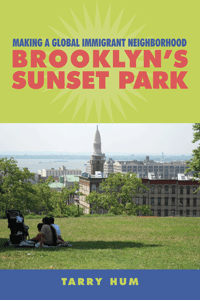

How immigrants are reinventing Sunset Park, forming new multi-racial alliances, and reshaping their community
How immigrants are reinventing Sunset Park, forming new multi-racial alliances, and reshaping their community


 How immigrants are reinventing Sunset Park, forming new multi-racial alliances, and reshaping their community
How immigrants are reinventing Sunset Park, forming new multi-racial alliances, and reshaping their community

|  |
Making a Global Immigrant NeighborhoodBrooklyn's Sunset ParkTarry Humpaper EAN: 978-1-43991-091-7 (ISBN: 1-4399-1091-X) |
Honorable Mention from the Association of Collegiate Schools of Planning's Paul Davidoff Award, 2015
"Tarry Hum’s study of a single neighborhood in Brooklyn, New York, creates a new narrative for the current global age of postindustrial, urban redevelopment. Outside the center, cities are increasingly made up of neighborhoods like Sunset Park: a multiracial space that is both a cultural home for different ethnic communities and a contested site of real estate speculation and gentrification. Hum documents this neighborhood’s crucial sense of place—and its potential for grassroots social action—with sensitivity and passion. Making a Global Immigrant Neighborhood is a great contribution to understanding New York in the 21st century."
—Sharon Zukin, Professor of Sociology, Brooklyn College and CUNY Graduate Center, and author of Naked City: The Death and Life of Authentic Urban Places
Based on more than a decade of research, Making a Global Immigrant Neighborhood charts the evolution of Sunset Park—with a densely concentrated working-poor and racially diverse immigrant population—from the late 1960s to its current status as one of New York City's most vibrant neighborhoods.
Tarry Hum shows how processes of globalization, such as shifts in low-wage labor markets and immigration patterns, shaped the neighborhood. She explains why Sunset Park's future now depends on Asian and Latino immigrant collaborations in advancing common interests in community building, civic engagement, entrepreneurialism, and sustainability planning. She shows, too, how residents' responses to urban development policies and projects and the capital represented by local institutions and banks foster community activism.
Hum pays close attention to the complex social, political, and spatial dynamics that forge a community and create new models of leadership as well as coalitions. The evolution of Sunset Park so astutely depicted in this book suggests new avenues for studying urban change and community development.
Excerpt available at www.temple.edu/tempress
"Making a Global Immigrant Neighborhood offers an excellent analysis and description of issues in New York City’s Sunset Park. With interesting details and insightful observations, Hum provides an in-depth look at some of the major issues and trends affecting urban areas in the United States—from development and demographics to inequality and race relations. One of the strengths of this book is illustrating the importance of Chinese banks and capital in the development of Sunset Park and the role that Chinese immigrants play as both affluent gentrifiers and working-class residents facing displacement. Making a Global Immigrant Neighborhood also explains how local issues in Sunset Park fit into the larger economic and political setting of New York City. Hum has a deep understanding of the history and everyday life of this neighborhood and the political, economic, and cultural dynamics shaping the community."
—Leland Saito, Associate Professor of Sociology at the University of Southern California and author of The Politics of Exclusion: The Failure of Race-Neutral Policies in Urban America
"[I]n her challenging and masterful new book...Tarry Hum presents a much more complex and politically attuned vision of Sunset Park, and urban immigrant neighborhoods in general.... The history is complex, but its recounting paints a rich picture of a neighborhood more familiar with change than with stasis.... Making a Global Immigrant Neighborhood is ultimately optimistic about the neighborhood’s prospects.... The brilliance of Hum’s 'global neighborhoods' framework is that it illuminates...tensions, and demolishes the simplistic construct of 'think globally act locally.'"
—Progressive Planning Magazine
"Hum presents a compelling analysis of contemporary economic and racial dynamics in the primarily Asian and Latino Sunset Park neighborhood of Brooklyn. With a long family history in the neighborhood, she brings a community insider's approach to this primarily qualitative study. Throughout the work, the author is also engaged in a broader theoretical project. Rejecting the traditional scholarly conceptualization of immigrant neighborhoods as ghettos or enclaves, Hum attempts to situate neighborhood formations and social and economic change in Sunset Park in an analytical context that takes in the influences of the postindustrial urban economy, the racialization of immigrant populations, and the neoliberal policy environment that has prevailed in New York City in recent decades..... [T]his work will be of strongest interest to undergraduate and graduate students and scholars of Asian American studies, urban studies, and urban planning. Summing Up: Highly Recommended."
—Choice
"Years of research have poured into this rich book that presents a true neighbourhood case study with topics as diverse (yet related) as street vendors, ethnic banks, gentrification, migrant civil society and environmental injustice. … Making a Global Immigrant Neighborhood is recommended reading for all those interested in the intersection of urban and ethnic/racial studies and in particular those interested in migrant civil society, ethnic banks and immigrant growth coalitions."
—Urban Studies
"[A] compelling community study of an immigrant neighborhood navigating the stresses of racial and socioeconomic transition against the backdrop of neoliberal planning policies of globally sourced investment and entrepreneurial urban regeneration.... Hum dramatically portrays a global immigrant neighborhood that exhibits the internal socioeconomic polarization that is characteristic of the global city."
—American Journal of Sociology
"Hum deftly dismantles both visions of New York City, arguing that the literatures on global cities and on ethnic enclaves/economies are in fact two sides of the same coin... Utilizing extensive contacts within local political institutions and the nonprofit sector, as well as an impressive amount of demographic, employment, and financial data, she constructs a compelling account of Sunset Park.... What Hum has done...to great effect, is to reconceive the relationship between immigration and global urbanization as a mutually constitutive set of processes. Through her in-depth study of Sunset Park, Hum shows how working-poor immigrants and their institutions are not merely a necessary condition of possibility for the transnational capitalist elite and their global cities, but have themselves become central actors in building, defending, shaping, and defining the city they have come to call home."
—International Migration Review
"As a rich neighborhood case study, [the book's] strength lies in its ethnographic focus and in-depth accounts of the social transformations that have taken place. The focus on neighborhood institutions such as labor unions, ethnic banks, and small businesses as key actors in the revitalization process is an important contribution. The author also draws extensively on her own experience as a local resident both before and during her fieldwork, which provides a unique vantage point into the question of neighborhood change.... The author’s urban planning background, along with her keen ethnographic insights, provides a unique blend of theoretical arguments and substantive findings.... [T]he book should be of interest to historians and immigration scholars who work at the intersection of intergroup relations, race, and urban space, as well as gentrification and urban inequality."
—Journal of American Ethnic History
Acknowledgments
Introduction
1. Immigrant Places: Toward a Theory of Global Neighborhoods
2. Making Sunset Park: Settlement, Decline, and Transformation
3. The Working Poverty of Neighborhood Revitalization: Industrial Sweatshops and Street Vendors
4. Immigrant Growth Coalitions and Neighborhood Change: The Role of Ethnic Banks
5. Gentrifying Sunset Park: Community Boards, City Planning, and a Migrant Civil Society
6. Power Plants, Sex Shops, Industrial Zones, and Open Space: The Politics of a Sustainable Working Waterfront
Conclusion
Notes
References
Index
Tarry Hum is Chair of the Department of Urban Studies at Queens College, and a member of the Doctoral Faculty at the Graduate Center, City University of New York.
Urban Studies
Asian American Studies
Latino/a Studies
Asian American History and Culture, edited by K. Scott Wong, Linda Trinh Võ, and Cathy Schlund-Vials.
Founded by Sucheng Chan in 1991, the Asian American History and Culture, series has sponsored innovative scholarship that has redefined, expanded, and advanced the field of Asian American studies while strengthening its links to related areas of scholarly inquiry and engaged critique. Like the field from which it emerged, the series remains rooted in the social sciences and humanities, encompassing multiple regions, formations, communities, and identities. Extending the vision of founding editor Sucheng Chan and emeriti editor Michael Omi and David Palumbo-Liu, series editors K. Scott Wong, Linda Trinh Võ, and Cathy Schlund-Vials continue to develop a foundational collection that embodies a range of theoretical and methodological approaches to Asian American studies.
© 2016 Temple University. All Rights Reserved. This page: http://www.temple.edu/tempress/titles/2299_reg.html.